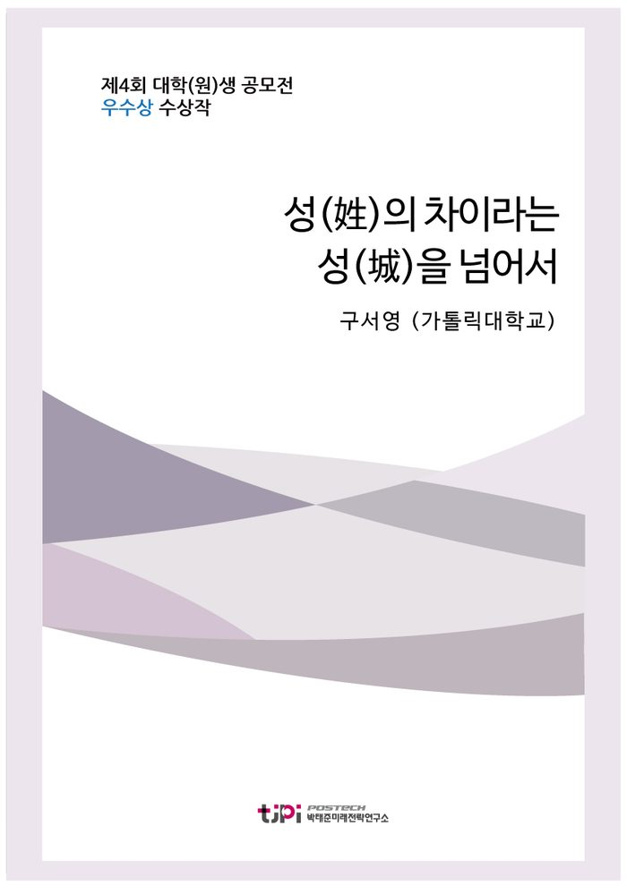

저자 구서영 (가톨릭대학교)연재일 2017.08.01

요 약
[에세이 우수상 수상작]
1장은 남녀의 대립으로 살펴본 우리나라 시민의식의 현주소로 필자가 고등학교 3년 간 겪어온 성적인 언어폭력과 여성주의 학회에서의 경험을 통한 문제의식 탐구이다.
본론인 2장은 청소년을 통해 살펴본 시민의식 약화의 원인으로 매체와 학교 교육의 문제점을 지적했다. 마지막 3장은 청소년의 성숙한 시민의식 함양을 위한 초중고 교육의 변화 방향으로 잘못된 것은 ‘바꾸자’, 잘못된 것을 ‘인정하고 직시하게 가르치자’, ‘잘못된 상황에서 ‘목소리를 낼 수 있게 가르치자’라는 세 가지 주제를 다루고 있다
<2017 에세이 공모주제>
- 우리나라 국민들의 시민의식 수준을 진단하고, 보다 성숙한 시민의식 함양을 위한 구체적인 방안을 제시하시오.
목 차
1- 남녀의 대립으로 살펴본 우리나라 시민의식의 현주소
2- 청소년을 통해 살펴보는 시민의식 약화의 원인: 매체와 학교가 잘못 가르치고 있다.
3- 청소년의 보다 성숙한 시민의식 함양을 위한 초중고 교육의 변화 방향
I. 잘못된 것은 ‘바꾸자’
ㅡ교과서 표현의 검수에 시민 위원회 필요
ㅡ교사를 대상으로 한 교육 실시
ㅡ창의적 체험활동의 방향 변화
II. 잘못된 것을 ‘인정하고 직시하게 가르치자’
ㅡ역사 교육 방식을 바꿔야 한다.
ㅡ매체 수용 방법을 가르치자
III. 잘못된 상황에서 ‘목소리를 낼 수 있게 가르치자’
4-결론지으며
내 용
[2017 청년 에세이 우수상] 성(姓)의 차이라는 성(城)을 넘어서
구서영 (가톨릭대학교)
1-
남녀의 대립으로 살펴본 우리나라 시민의식의 현주소
각 대학교의 학생들이 익명으로 의견을 투고하며 공감을 받는
SNS
페이지를 대나무숲
이하 대숲
이라고 한다
대숲을 살펴보면 어떤 주제가 최근 대학생들 사이에서
가장 논란이 되는지를 알 수 있다
시선강간
은 최근 대숲에서 가장 뜨거운 주제 중 하나다
몸에 붙는 웃옷이나
치마를 입고 외출을 한 여성이
특정 부위를 뚫어지게 쳐다보는 남성에 의해 성적 수치심을 느꼈다는 데에서
파생된 이 단어는 많은 여성들의 공감을 얻으며 큰 파장을 불러 일으켰다
단어 자체가 가지고 있는 어감이
강렬하기 때문에 이에 대한 반발 역시 거세게 일어났다
이제는 눈을 둘 자유도 없느냐
, ‘
프로불편러
여성의 착각일 뿐이다
부터 그렇게 붙는 옷을 입는 것은 사람들에게 보여주려고 한 것이 아니냐 등이 남성들의 주 의견이라면 당해보지
않으면 불쾌감을 모른다
옷을 어떻게 입었다고 해서 불쾌한 눈으로 쳐다보는 것이 당연한 것이냐 등이
여성들의 항의이다
여성과 남성의 대립은 모두 일리 있는 말처럼 보인다
. 2000
년 대 초
여성부에 의해 제기된 취업 시 군가산점 제도
논란과 폐지 이후 여성부는 남성들의 공공연한 적이 되었다
. 2010
년에는 모 교육방송의 대표 국어 강사가
군대와 군인을 폄하하는 발언을 함으로써 많은 남성들의 분노를 일으키기도 했다
이처럼 군대와 출산은
남녀의 대립에 있어서 아직까지도 가장 민감한 주제로 다뤄지고 있다
여성들은 임신과 출산으로 인한 경력
단절과 스트레스를 이유로 아직까지도 우리사회의 유리천장은 깨지지 않았다고 주장하고 남성들은 여성 임원 할당제 등으로 인해 자신들이 역차별을 겪고
있다고 주장한다
남성과 여성 중 누구의 입장이 맞는 말일까
대한민국의 남녀는 왜 이렇게 서로 대립하는 것이고
서로의 차이를
존중하지 못하는 것일까
우리나라 국민들의 시민의식에 대해 생각해봤을 때 내게 가장 먼저 떠오른 주제는
다름을 인정하지 못하고 싸우는 남녀의 의식이었다
이러한 주제의 주관적인 배경에는 여성의 입장에서 고등학교
년간 필자가 보고 듣고 겪어왔던 일들이 있다
필자는 지극히 평범한
공립 남녀공학 고등학교를 졸업했고
이과를 선택했기 때문에 한 반의 성비는 평균적으로
4:1
정도였음을 밝힌다
최대한 객관적으로 쓰기 위해 주관적인 판단은
배제하고 요약적으로 소개하겠다
먼저 고등학교
학년
역사 토론 시간에 반의 모든 여학생들 앞에서 실제로 이루어졌던 발언이다
. ‘
여자는 태생적으로
10
시간 이상 자리에 앉아있을 수 없어 공부를 잘 할 수 없고 남자보다 열등하다
부장판사 중 여성이 단 한 명뿐인 걸 보면 알 수 있다
.’ ‘
여자는
남자의 성욕을 풀어주기 위한 도구로써만 가치가 있다
여성은 태생적으로 나약하기 때문에 고대시대부터
매춘을 하며 살아왔고 그것이 그들의 생존을 위한 최고의 방침이었다
.’
둘째
고등학교
학년이 되어서 청소시간에 반의 남학생이 소리쳤던 말이다
청소는 여자나 하는 건데
’.
여자 담임선생님이 무작위로 짝꿍을 지어주셨을 때 반의 남학생이 항의했던 말이다
. ‘
왜 내가 암컷 옆에 앉아야 하는지 모르겠다
’.
담임선생님께서 이에
대해 화를 내시자 같은 남학생이 했던 말은
여자 주제에
였고
선생님께서는 결국 눈물을 보이셨다
마지막으로
학년이 되어 수업을 들어오셨던 남자 교과목 선생님께서 최순실 게이트와 조현아 회항사건을 예시로 들면서 하신
말씀 역시 기억에 남는다
여자는
의류나 숙박 산업 이외의 다른 사업에 사장으로서 관여할 만한 그릇이 되지 못한다
’.
이외에도 여자는 예쁘기만 하면 된다
너도 공부만 하지 말고 화장 좀 하고 살아라
서울대 간 여자는
인기 없다 등 수많은 언어폭력들 사이에서 나는 살아왔다
상황 자체는 조금씩 차이가 있겠지만 분명히
이러한 일들은 우리 학교만의 특수성이 아닐 것이라 단언한다
혹자는 이를 보고 짓궂은 소수의 의견일
뿐인데 과민반응한다고 생각할 수도 있을 것이다
그러나 실제로
이런
말을 하는 아이들이 소수인 것은 사실이지만 그들을 둘러싼 절대다수의 반응은 한결같았다
남자 친구들은
누구도 그들을 제지하지 않고 오히려 영웅취급하거나 쿨하다
멋지다라고 생각한다
흔히 말하는 무리의 중심이 되기도 한다
더 놀라운 것은 여자 친구들의
반응이었다
앞에서는 쑥덕거리거나 욕하면서도 실제로 그 남자 아이들을 처단하거나 반항하지 않았다
수업자료로 틀어주는 영상 화면에 대중적인 미의 잣대로 예쁘지 않은 여성이 나오면
아 눈갱 당했어
라며 낄낄대고 비속어를 쓰던 남자아이들과 이에 대해
불편함을 느끼더라도 반발하지 않는 여자 친구들
이미 외모의 잣대로 평가받는 것에 무뎌질 정도로 체념을
한 여성들이 여태껏 어떠한 시선을 받으며 살아왔는지 짐작할 수 있을 것이다
많은 것이 한참 잘못되었음을
느낄 수 있는 단면이었다
그렇다면 여자들은 항상 피해자이고
정당하고 옳은 목소리만을 내는 사람들일까
그렇지 않다는 것을 나는
올해 초 모 대학교 여성주의학회에서 주최한 페미니즘 강연에서 직접 느꼈다
평소 페미니즘에 대해 잘
알지 못했던 나였지만 행사 도우미로 참여한 고등학교 친구의 권유로
또 예전부터 막연히 가지고 있었던
호기심으로 강연회에 참여했던 것이었다
근대 페미니즘의 역사
선구적인
페미니스트들의 다소 전투적인
(?)
선언들을 들으며 조금도 당황하지 않았다고 말한다면 사실이 아니겠지만
한편으로는 자유롭고 당당한 여성들의 진면목을 발견한 것 같아 존경스러웠다
여성을 옥죄어온
코르셋
을 집어던지고
남성이
배워야 할 존재는 여성의 부드러운 리더십과 모성애라는 내용의 강연은 활기찼고
참석자들의 토의 역시
호의를 바탕으로 한 진심어린 의견들이 쏟아져 나오는 시간이었다
그러나 이러한 처음의 내 생각은 곧이어
이어진 질의응답 시간에 완전히 무너져 내리고 말았다
본인을 무성애자라고 밝힌 남성분이 상당히 조심스러운 말투로
질문을 던지신 순간 그곳에 있던 수많은 여성참가자들은 마치 약속이라도 한 듯 한꺼번에 적대적인 태도로 웅성거리기 시작했다
질문의 내용은 나 역시도 강연 중간에 의문을 가진 부분이었다
강연
중간에 강연자 분께서 하신 말씀 중에는 페미니즘 물결은 온전히 여성들만의 것이며 남성은 이에 완전히 무관하기 때문에 배제시켜야 한다는 내용이 있었다
애초에 여성주의의 계기가 우리 사회의 상대적 강자였던 남성의 억압에 대응하기 위한 것이었는데 남성을 대상으로
한 소통과 설득 없이 페미니즘이 발전해야 한다니 아이러니가 아닌가
무성애자 남성분께서는 이에 대한
질문으로
남성을 완전히 배제시킨 채 페미니즘을 추구하는 것이 분명히 어떤 가치가 있어서 진행되는 것일
텐데 그 의의가 어떤 것인지 궁금하다
고 하셨다
분명히 페미니즘에 대해 잘 모르는 이라면 충분히 궁금해 할
만 한 내용인데도
질문이 던져짐에 무섭게 여성이 대다수인 관중석은 분노의 웅성거림으로 가득 찼고 심지어
몇몇 분들은 질문자에게 밖으로 나가라며 욕을 하기도 했다
사실 따지고 보면 질문의 내용 자체가 문제가
아니라
단지 질문자가 남성이라는 이유로 그의 질문에 과한 반응을 하는 게 아닌가 의구심이 들었다
남성분께서는 자신의 의도가 잘못 전달됨에 당황하셨고 가치가 분명히 있어서 하는 것인데 그것이 무엇인지 궁금하고
배우고 싶다고 재차 정정하셨으나 관중석의 분노는 가라앉지 않았고 강연자 분께서는 그분에게
대답하기
싫으므로 대답을 거부하겠다
고 하셨다
결국 질문자 분은
비난을 이기지 못하고 퇴장하게 되었다
무성애자라면 오히려 우리 사회의 성적 소수자가 아닌가
연대하고 함께 고민하지는 못할지라도 적대시할 대상은 결코 아니었을 텐데 모든 남성을 무조건적인 적대자로 간주하고
자신만의 세계에 갇혀버린 여성들은 그곳에서 그들이 그렇게나 혐오하던 다수의 횡포를 저지르고 있었다
. 21
세기
세계화 속 대한민국 시민으로서 가져야 할 태도는 다양성을 포용하고 서로의 가치를 존중하는 것이 아니었던가
자유로운
토의의 가치를 인정하지 못하고 토의자가 남성이라는 이유로 그의 입을 막는데 급했던 여대생들의 시민의식에 실망을 감출 수가 없었다
2-
청소년을 통해 살펴보는 시민의식 약화의 원인
매체와 학교가 잘못 가르치고 있다
그렇다면 대체 어떤 원인이 이렇게 실망스러운 시민의식을 낳은
것일까
본론으로 들어가 보자
짧은
20
년을
살아오는 동안 필자가 보아온 세상이 절대 전부는 아닐 것이고 한 개인으로서의 단편적인 경험담일 뿐이지만 우리 사회에서 남녀의 대립으로 인한 시민의식의
약화는 대한민국의 시민이라면 누구도 부정할 수 없는 사실일 것이다
여태껏 필자가 마주쳐왔던 시민의식
부재의 대상은 주로
10
대에서
20
대들이었기에
또 좋게 포장하자면 청소년은 국가미래의 지표이기 때문에 시민의식 고양의 주대상은 그들이 되어야 할 것이다
청소년들이 가치관 확립에 가장 큰 영향을 받아왔고 현재도 받고 있는 곳은 크게 두 가지이다
첫째는 가정을 제외하고 가장 많은 시간을 보내게 되는 의무교육 장소인 학교
그리고 이들의 여가생활을 대표해주는 미디어다
현재는 잘 알려진 경각심의 대상인 대중 매체는 이미 오랜
기간 동안 성 상품화와 아젠다 세팅을 통한 성적 고정관념 강화에 일조해왔다
대표적인 예로 정보의 바다인
인터넷은 그 이름에 무색하게 정화 능력을 잃어버린 지 오래이다
인터넷 사이트 중 많은 논란이 되었던
남성들의 일간베스트와 여성들의 메갈리아
워마드는 각각 여성과 남성을
김치녀
’ ‘
한남
등으로 폄하하며 그 정도가
지나치게 서로를 비하해 왔다
그러나 이 모든 사이트는 표현의 자유라는 명목 하에 누구나
설령 그 대상이 사리분별 능력이 없는 어린아이일지라도 접속과 활동이 가능하게 되어있다
또 이런 사이트에 굳이 접속하지 않더라도ㅡ 당장 가장 건전할 것 같은 뉴스 기사의 댓글 란만 보더라도ㅡ 필터링이
되지 않은 편견과 선동성 댓글들이 가득하다
여성 가족부에서 모 과자의 생김새가 생식기를 닮아 흉하다면서
판매를 중지시켰다는 루머가 대표적인 예시인데 아직도 많은 사람들이 이를 사실이라고 믿고 있다
텔레비전
프로그램 역시 마찬가지이다
여성 아이돌 그룹의 지나친 노출이 성행하는 가요 프로그램은 성 상품화에
앞장서고 있다
가난하지만 예쁘고 명랑한 소위 캔디 형 여자 주인공이 현대판 백마 탄 왕자를 만나 사랑을
이루는 드라마는 여성은 외모
남성은 능력이 중요하다는 성적 고정관념 강화에 기여하고 있다
예능 및 개그 프로그램에서는 못생긴 여성을 기피하는 남성의 모습을 적나라하게 드러내고 남녀의 습관이나 말투를
일반화해 웃음 소재로 삼으면서 시청자들의 무의식중에 성적 편견을 심어주고 있다
매체가 점점 자극성을
띌수록 시청자의 시야는 좁아지고 있다
학교의 문제로 가면 더욱 심각해진다
조선시대부터 뿌리박힌 유학의 영향을 굳이 들먹이지 않더라도 어린 아이들에게 있어 선생님이라는 존재는 어른이란
이유만으로도 존경받을 만한 절대적인 대상이고
국가에서 허가해주는 교과서는 어겨서는 안 될 불변의 진리이다
물론 좋은 선생님들만 만났던 학생도 있을 수 있으니 전자에 대한 설명은 생략한다고 해도 후자는 여전히 의문이
드는 상황이다
대체 왜
국어 교과서에서 배우는
여성적 어조
는 항상 순종적이고
임을 기다리기만 하는 것일까
대체 왜 불의에 항거하는 강한 의지가 드러난 작품은
남성적
이라고 배우는 것일까
주입식
교육의 평가방식은 배우는 내용을 있는 그대로 수용하고 토씨 하나 틀리지 않고 외운 답을 적어내는 것이기 때문에 우리 사회에서 성적과 지성이 절대로
비례하지 않는 것일지 모른다
첫째
우리는
잘못된 것들을 배워왔고
’.
둘째
우리는
잘못된 것을 감히 찾아낼 수 있다고 생각하지 못하고
’,
셋째
, ‘
잘못된 것이 있어도 목소리를 내지 못해
왔기 때문이다
3-
청소년의 보다 성숙한 시민의식 함양을 위한 초중고 교육의 변화 방향
앞서 내린 결론에 해당하는 해결책을 초중고 교육에 맞춰 생각해보았다
먼저
잘못된 것들을 배워온 것에 대해 우리는 잘못된 것을 바꿔야
한다
다음으로 아이들이 잘못된 것이 잘못되었음을 알지 못하는 이유는 배우는 것들이 항상 고정되어 있고
다양한 해석의 여지없이 우리에게 제시되기 때문이다
따라서 우리는 어른으로서 잘못된 것을 인정해야 하고
때로는 실수를 통한 교훈을 통해 틀린 것을 직시할 수 있도록 가르쳐야 한다
마지막 문제에 대한 해결책은
불공정한 상황 앞에서 목소리를 내는 법을 가르치는 것이 될 것이다
앞으로 다룰 내용은 남녀의 성적인
차이를 존중하고 다름을 포용하는 목적의 개선 방안들 위주이지만 이를 확장시켜 적용한다면 우리 사회 구성원 모두를 존중하는 법을 배울 수 있을 것이다
I.
잘못된 것은
바꾸자
ㅡ교과서 표현의 검수에 시민 위원회 필요
현재 초중고 교과서의 검수에 인권 관련 위원회가 개입한다고
알고 있다
그럼에도 불구하고 성차별적인 표현들이나 사회적 약자에 대한 편견적 시선이 드러나는 이유는
검수자가 자신도 모르게 가지고 있는 도덕적 무감각 때문일 것이다
검수자를 비난하는 것이 아니다
차별을 당하는 사람은 자신의 차별에 대해 더욱 예민하고 섬세한 시각을 가지고 있기 때문에 그렇지 못한 이들은
이를 하나하나 이해하기 어려울 수 있다
따라서 전문 검수자들의 검토를 거치는 것뿐 아니라 다양한 시민
구성원들로 이루어진 사회집단이 교과서 표현을 검수하고 공청회와 같은 토의를 통해 이를 정정하도록 제도를 마련해야 할 것이다
불의에 항거할 줄 아는 여성 시민이라면 국어 교과서의
남성적
의지적 어조
라는 말에 마땅히 항의를 제기하지 않았을까
ㅡ교사를 대상으로 한 교육 실시
장에서 언급했던 고등학교 생활의 경험담 중 사실 나에게 있어
가장 큰 상처를 줬었던 것은 그 말 자체로만 놓고 보면 가장 덜 충격적인
학년 때 교과목 선생님의
발언이다
여자는 큰 사업을 품을 그릇이 되지 못한다는 말을
많은
것을 배워오셨던 존경하는 선생님께 직접 듣는 것은 정말로 비참했다
그런데 만약 저 말을 가치관이 뚜렷하지
않은 초등학생이나 중학생 때 들었으면 어땠을까
어린 학생들에게 선생님은 하늘처럼 절대적이기 때문에
이는 도덕 관념의 확립에 있어 큰 문제가 될 것이다
이러한 개인적인 경험담 외에도 정말 보편적인 사례는
체육 시간에 이루어지지 않을까 생각이 된다
초등학생 때부터 고등학생 때까지 체육 자유 시간이 되면
선생님의 지시하에 한결 같이
남학생은 축구
’ ‘
여학생은
피구
를 하게 된다
여학생이 축구를 못 하기 때문에 그렇다고
반박할 수 도 있지만 단 한 번도 안 해봤기에 이를 알 수조차 없었다
. ‘
축구
, ‘
피구
팀은 성별에
따라서가 아닌
흥미와 취미를 통해 자율적으로 결정하게 하도록 선생님들을 대상으로 가르쳐주기를 항상
바라왔다
ㅡ창의적 체험활동의 방향 변화
가장 다루고 싶었던 부분이다
현재의 초중고 교육시간에는 국가에서 의무적으로 지정한 창의적 체험활동이 있다
학생들은 이를 통해 더불어 사는 가치를 확립할 수 있지만 현재의 창체 강연은 그저 강사분의
PPT
발표로
이루어지는 주입식 교육과 문제집을 펼쳐 놓는 자습시간에 불과하다
설령 그 내용이 좋다고 하더라도 순서대로
의무적으로 선정된 학급이 돌아가면서 강당에 모여 수업을 듣고 나머지 학급은 교실에서 텔레비전 볼륨을 줄인 채 이어폰을 꽂고 수학문제를 푸는 시간이다
필자는 창의적 체험활동 시간이 현재 중학교
학년들을 대상으로 이루어지고
있는 자유학기제처럼 실질적인 체험으로 구성되어야 한다고 생각한다
도덕 체계의 완성은 생애주기 중 어린
나이에 이루어진다는 말이 있다
진짜 조기교육이 필요한 분야는 오히려 창체 교육이다
기아체험과 장애우 체험과 같이 성 박물관 등을 방문하여 임산부 체험
군대
체험과 같이 남녀 성별을 바꾸는 활동을 한다면
역지사지의 방식으로 서로의 고충을 이해할 수 있을 것이다
이를 위해서 실질적으로 개선할 수 있는 부분은 현재 거의 모든 학교에서 이루어지는 격주
시간 창체 교육을
달에
시간 형식으로 바꾸고 체험활동을 진행시키는 것이다
사회적 약자를
배려하는 필요성을 스스로 느낄 수 있게 해야 한다
체험에서만 그쳐야 하는가
직접 이들을 도울 수 있는 기회를 주는 것이 권장할 만한 방법이다
필자가 대학에 와서
가장 즐겁고 뿌듯하게 시행하고 있는 프로젝트를 소개해보고자 한다
바로 교양 과목 시간에 이루어지는
‘Good Work Project’
이다
학생들은
명에서
명까지 자유롭게 한 조를 짜고
한 사람당 부여받은 돈
4000
원으로 자신에게 있어 가장 큰 가치를
생산해내는 활동을 한다
이 가치는 꼭 물질적일 필요는 없고 대신 그 활용 분야가 가장 큰 정신적 보람을
창출해내면 되는 것이다
필자의 조는 다섯명 인데 난치병 어린이의 소원을 들어주는
‘we make a wish‘
프로젝트를 진행 중이다
목표는 난치병
어린이의 문제에 사람들이 관심을 가질 수 있게끔 이를 대중적으로 알리고 실질적으로 이들에게 도움이 되도록 모금 기부를 하는 것이다
. 1
차로
만원을 모아 자몽청과 같은 음료수를 직접 만들어 길거리
캠페인을 통해 이를 알리면서 음료를 판매하고
, 2
차로 이에 얻은 수익금을 자본으로 인터넷 사이트
텀블벅
을 통해 역시 이를 알리면서 직접 디자인한 어린이 스티커
뱃지
펜 등을 판매하는 것이다
시간과 노력을 통해 처음자본의 수십 배로 예상되는 금전적인 도움을 줄 수 있기도 하고
이를
통해 예비 의료인으로서 난치병에 대해 더욱 자세히 알아갈 수도
많은 사람들에게 난치병 아동 문제에
관심을 가지게 할 수도 있다는 점에서 많은 것을 얻을 수 있는 프로젝트가 될 것이다
굳이 모금이 아니더라도
봉사나 캠페인을 통해서 자신이 선택한 분야를 도와주는 이러한 프로젝트는 중학생이나 고등학생도 충분히 할 수
있는 좋은 기회라고 생각된다
자유학기제 등을 실행할 때 교육부 측에서 이러한 활동을 장려하고 특히
사회적 약자를 돕는 방식으로 진행을 한다면 성별을 포함해
나와 다른 누군가
를 알아가고 도와주는 과정에서 학생들이 나눔과 배려의 가치를 느낄 것이다
창의적
체험활동의 변화가 학생들의 시민 의식을 고양시키는 데 큰 도움이 될 거라고 믿어 의심치 않는다
II.
잘못된 것을
인정하고 직시하게 가르치자
ㅡ역사 교육 방식을 바꿔야 한다
역사 교육이 중요한 이유는 역사가 사실에 대한 서술과 더불어
서술자의 주관적인 의지가 개입된 선별로 이루어져있기 때문이다
세상 모든 것은 상대적이라는 것을 배울
수 있는 좋은 기회이기 때문에 이를 더욱 잘 활용해야 한다
현재의 암기 위주 교육은 머리에 남지도
않고 아무런 교훈을 줄 수 없는 지나친 평가 위주 교육이다
따라서 진도를 나가기에 급급한 현재 교실은
정말 중요한
시사점
은 생각해 볼 기회도 주지 않는다
또 교과서 자체의 잘못도 있다
우리나라 국민으로서 자긍심을 기르기
위해 지나치게 긍정적이고 자민족 중심적인 서술이 많다고 생각한다
잘못된 것을 인정하고 가르칠 수 있어야
학생들 역시 실수는 죄가 될 수 있으며 이를 반성하고 뉘우치는 것이 중요하다는 것을 인지할 수 있다
베트남전에
참여했던 한국 군인들의 잘못들
민간인 학살과 강간이나 필리핀 사회 내에서 심각한 혐한을 불러 일으켜온
코피노 문제들에 대해 우리는 한 번도 배우지 못했다
잘못된 역사는 분명히 아프지만 이를 인정하고 직시하도록
가르치는 것만이 학생들로 하여금 자신이 생각하는 불변의 진리가 틀릴 수도 있음을 깨닫게 해 줄 것이다
잘못에
대해 사과할 수 있을 것이다
ㅡ매체 수용 방법을 가르치자
앞서 살펴 본 바와 같이 대중 매체는 초중고 학생들의 잘못된
가치관 형성에 큰 영향을 미친다
현재는 없는
, ‘
대중매체
수용 및 활용 방안
에 대한 교육이 정규교육 속에서 이루어져야 한다고 생각된다
무비판적인 매체의 수용이 왜 잘못되었고
어떤 점이 잘못된 것인지
직시할 수 있도록 학생들을 가르친다면 이러한 매체의 악기능에서 학생들을 보호하는데 도움이 될 것이다
III.
잘못된 상황에서
목소리를 낼 수
있게 가르치자
잘못을 인지하는 법을 배웠다면 이제는 학생들이 직접 이를
고쳐나가도록 유도해야 한다
철학자 하버마스가 가르치듯 자유로운 발언 환경에서 꼬리에 꼬리를 무는 토의는
감동과 기쁨의 장이며 민주주의의 발판이 된다
고전 강독 시간이 정규수업에 편성되어 있던 혁신중학교를
졸업한 필자는 아직까지도 당시에 읽고 토의했던 책들이 나의 사고방향을 넓혀주는데 가장 큰 도움이 되었다고 생각한다
역사와 윤리 등의 측면에서 독서활동은 세상을 바라보는 시야를 넓히며 시대의 현자들과 대화할 수 있는 최고의
방법이다
자유론
자기 앞의 생
소크라테스의 변론 등의 책을 읽으며 아름다운 것과 사랑하는 것은 다르며 살아있는 것과 살아가는 것이 다르다는
것을 배웠었다
사회적 약자인 탈북민이나 홀로코스트 당시의 유대인 자서전을 읽으며 눈물을 흘려본 이라면
사회에 나가서 차별당하는 이들을 보았을 때 절대로 이들을 내버려 둘 수 없을 것이다
남녀의 차원에서도
서로 다른 상대방의 책을 읽어 보고
토의를 통해 더불어 살아가는 삶의 가치를 확립한다면 사회에 나가서
부당한 상황을 마주쳤을 떄 자신의 목소리를 낼 수 있는 사람이 될 것이다
입시 전쟁에 바쁜 고등학교
때 이것이 현실적으로 불가능하다면
초등학생과 중학생을 대상으로 한 고전 탐독 시간이라도 활발히 이루어져야
한다
4-
결론지으며
이제까지 짧은 글을 통해 우리나라 국민의 시민의식 수준을
성찰하고 그에 대한 원인 분석
해결 방안 모색을 진행하였다
남녀의
대립으로 대표되는
다름을 포용하지 못하는 많은 시민들의 자세를 살펴보니 매체와 학교의 교육에서 그
원인을 찾을 수 있었다
이에 대한 해결책으로는 잘못된 것을 시정하고 잘못을 인정하는 자세
잘못을 소리쳐 말할 수 있는 자세를 배우는 것 등이 있었다
그렇다면
년 전 서울시장 후보 아드님 말처럼 우리나라 국민은 시민의식이 낮고 미개한 것일까
당장 최근만 살펴보더라도 누구도 감히 그렇게 말할 수 없음은 전 세계가 감탄했던 평화적 촛불집회를 통해 증명되었다
장미 대선을 맞아 만
18
세 선거권 문제가 화두가 되며 각종
SNS
를 통해 활발히 자신의 의견을 표출하던 필자 주변의 친구들만 보더라도
뉴스를 통해 각종 안타까운 사연이 소개될 때마다 자발적인 모금운동이 이루어지는 것만 보더라도 이는 확실히 아니다
고작
20
살밖에 되지 않았지만 각종 매체를 통해 접하는 존경스러운 시민 분들을 보며 나는
대한민국의 시민으로 자랑스러운 적이 그렇지 않은 적보다 많았었다
그러나 부모의 입장에서 사랑하는 자식일수록
그가 저지른 잘못을 고쳐주듯이 조국을 사랑하고 대한민국이 더욱 자랑스러운 국가가 되기를 바라는 마음에서 나는 우리 시민들이 함께 연대하여 국가를
만들어가기를 소망한다
의 차이라는 높은 성
넘어서는 것은 분명 어려운 일일테지만 이를 이뤄낸다면
끝에는 더욱 찬란한 대한민국이 기다리고 있을 것임을 믿어 의심치 않는다